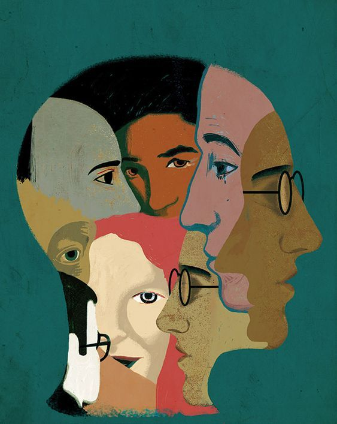

Mental Health

Mental health care shapes communities, not just individuals/ We believe mental health care carries a responsibility to the wider community.
At The Open Window, giving back is a shared responsibility and a core part of our relationship with the
communities around us. Pro bono care allows us to return resources, skill, and time to communities that
have historically had limited access to mental health support.
Our therapists have the option to take on pro bono cases, supported by ethical guidelines, supervision,
and clear boundaries that protect both client and practitioner.Pro bono work is not only about
individual access, but about strengthening community wellbeing and resilience over time.
When care is withheld due to cost, communities absorb that impact through stress, burnout, and reduced
capacity to cope. By widening access, we help build healthier support systems that extend beyond the
therapy room.
For our therapists, giving back is not an obligation, but an expression of professional ethics, social
accountability, and connection to the wider context in which mental health exists.
When done with care, pro bono work strengthens individuals, communities, and the practice of therapy
itself.